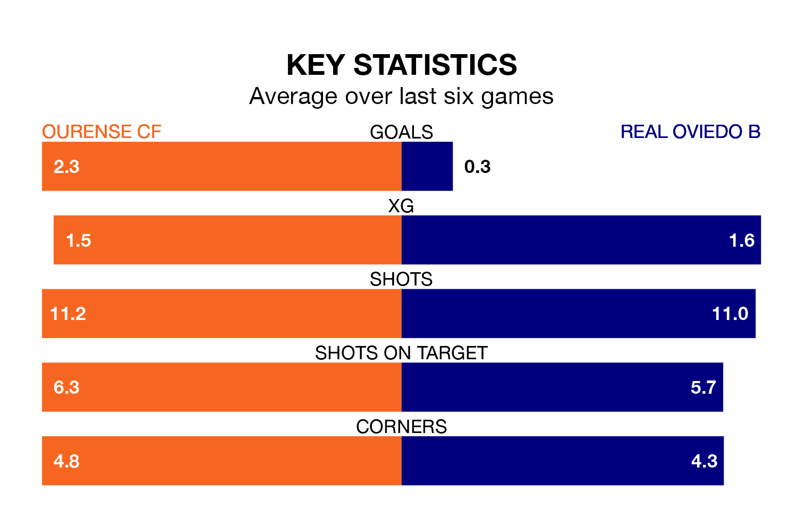

Relegation candidates Real Oviedo B face a challenge away against high-flying Ourense CF at the Estadio Mpal De Oira on Sunday.
Real Oviedo B are 17th in the Segunda División RFEF Group 1 table, and have picked up six wins and 12 draws in their 32 games to date.
Ourense, meanwhile, are top of the standings with 67 points, having won 19 and drawn 10.
Ourense are in good form in the Segunda División RFEF Group 1, with four wins and two draws from their last six games.
With no wins and a draw over that period, Oviedo B's form is much worse – they have taken one point from 18, compared to the home team's 14.
With 50 goals in 32 games so far this season, Ourense are the league's second-highest scorers with 1.6 goals per game. And they are conceding fewer than average, letting in 19 goals at a rate of 0.6 per game.
The visitors, meanwhile, are below average scorers, with 0.8 goals per game, compared to a league average of 1.2. They have conceded 1.2 goals per game.
In the last three years, Ourense and Oviedo B have played each other on three occasions. They won one each, and they drew once.
Their last meeting was on December 16, when they played out a 0-0 draw.
Ourense's last match was on Sunday, a 2-0 win against Pontevedra CF.
Oviedo B lost 1-0 against SD Compostela last time out, on April 20.
Updated: 07:59 (UTC), 26/04/24